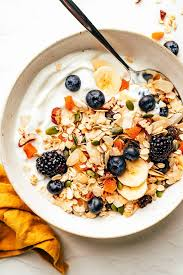

Muesli
Back to Home

Description
A wholesome blend of rolled oats, nuts, and dried fruits, served with milk or yogurt.
Ingredients
- 1 cup rolled oats
- 1/2 cup mixed nuts (almonds, walnuts, etc.)
- 1/2 cup dried fruits (raisins, cranberries, etc.)
- 1 tablespoon honey (optional)
- Milk or yogurt for serving
Steps
- In a bowl, combine the rolled oats, mixed nuts, and dried fruits.
- Drizzle with honey if desired.
- Serve with milk or yogurt on top.
- Enjoy as a healthy breakfast or snack.